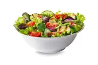

Salad

Description
This spinach apple salad is one of our best salad recipes because it's classic and simple! It pairs tangy apple and thin sliced pear with spinach and a zingy balsamic dressing. Add to that shiny glazed walnuts or pecans, which add a signature crunch. Dress it up with a fancy cheese like Manchego if you like, or keep it simple and plant-based.
Ingredients
- Apple
- Pear
- Spinach
- Baby Greens
Steps
- Make the Glazed Walnuts or Glazed Pecans. (While they cook, prep the rest of the salad. Or, you can make these ahead!)
- Make the Balsamic Dressing.
- Core the apple and pear, cut them into thin slices.
- Place the greens on serving plates and top with apples, pears, and walnuts. Pour over the dressing and serve. (Pro tip: Dress it up by adding cubed Manchego cheese!)